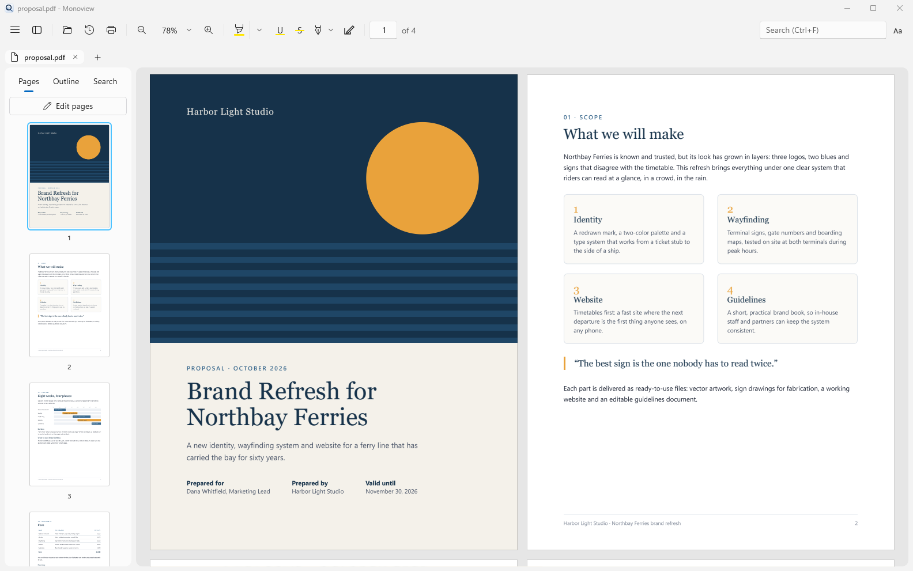
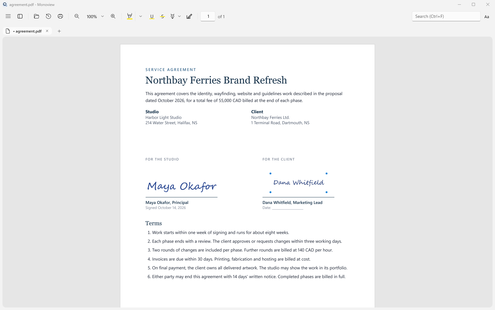
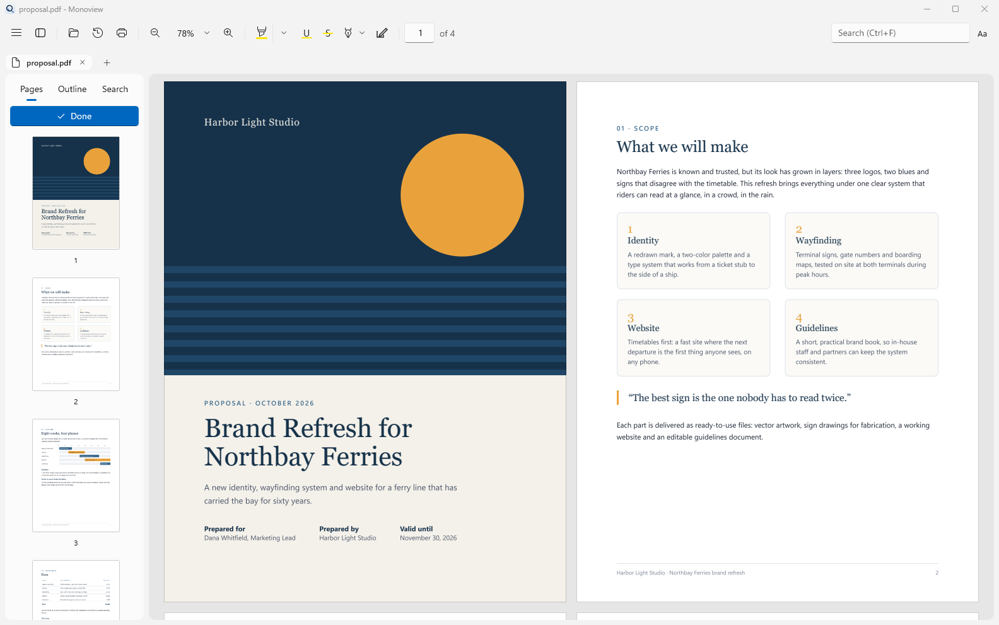
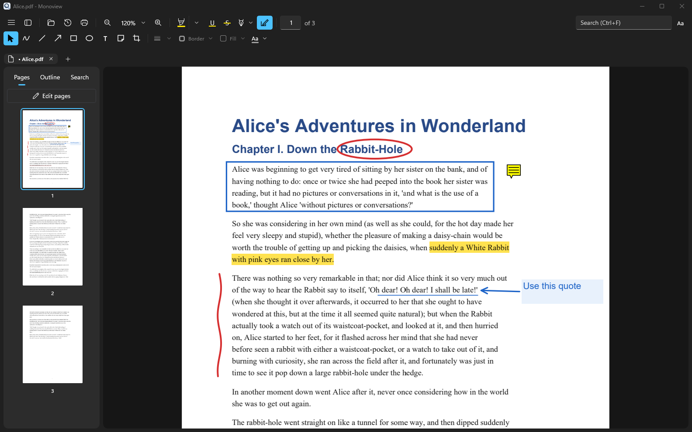
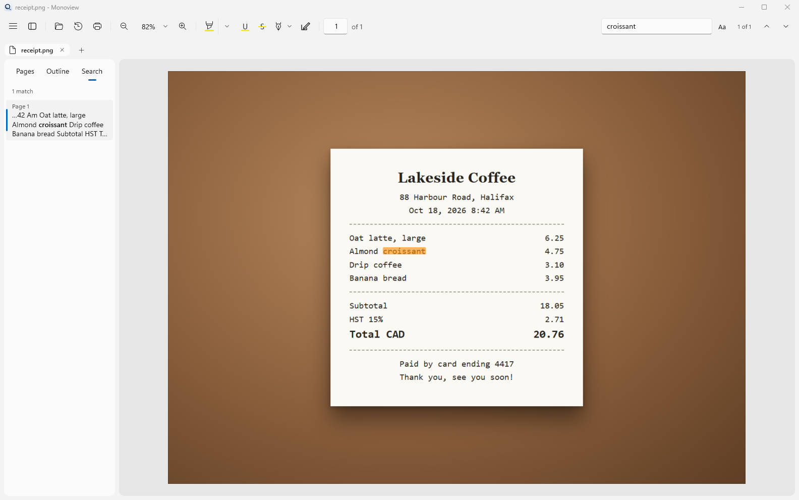

Preview for Windows.
Monoview is a fast, clean viewer for PDFs and pictures, modeled on macOS Preview. Open a file, read it, mark it up, sign it or fill it in, and get on with your day.

Free and open source under the MIT License. No account, no ads, no telemetry. Prefer an installer? Get setup.exe or the zip on GitHub.

Everything you open a file to do.
PDFs, PNGs and JPGs open in the same window. Built on PDFium, the engine inside Chrome. Your edits save as standard PDF annotations, so Acrobat, Edge and Preview show them too.
Fast reading
Only the pages you see are drawn, so big files stay smooth. Zoom around the pointer, two-page view, outline, thumbnails and search.
Markup and signatures
Highlight, draw, add shapes, text boxes and sticky notes. Draw, type or photograph your signature and place it in one click.
Pictures and live text
Open PNG and JPG files like PDFs and save them as PDF. Text in scans and pictures is read with Windows OCR, so you can select, copy and search it.
Forms
Fill text fields, check boxes, radio buttons and drop-downs. Tab between fields. Form scripts never run.
Pages
Reorder, rotate, crop, delete and insert pages. Drag pages from one document into another, even across windows.
Safe by default
Undo for every edit. Saves write a temporary file first, so a failed save never damages the original.
Light or dark, it feels at home on Windows.




More in the works.
Monoview is young and growing. These are next on the list.
Two ways to install.
Monoview-0.3.0-setup.exe
Installs for you or for everyone, where you choose. Adds Monoview to the Start menu and Open with, and can make it your default PDF app.
Monoview-0.3.0-win-x64.zip
Unzip it anywhere and run Monoview.exe. Nothing is installed, and .NET is included.